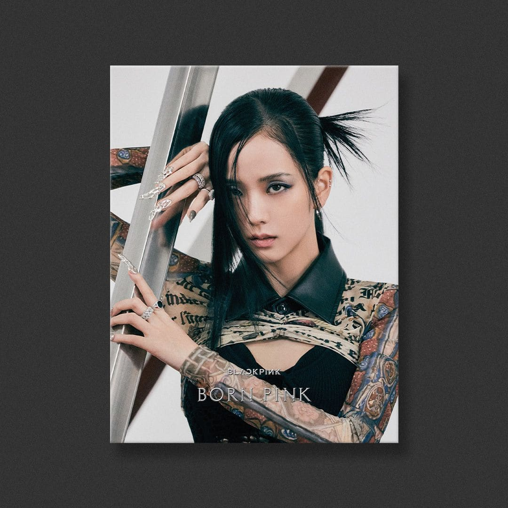
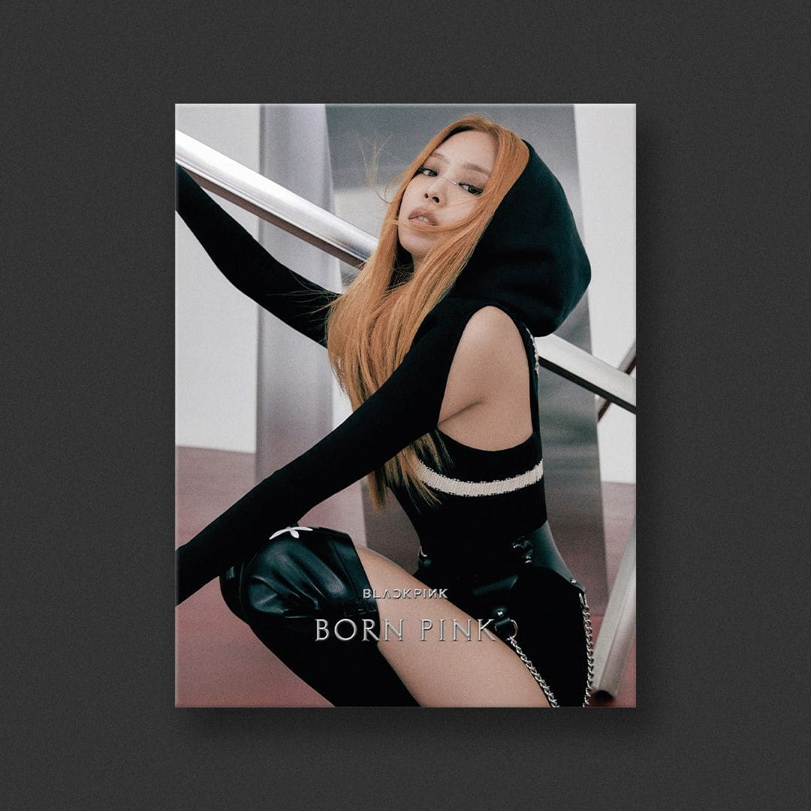
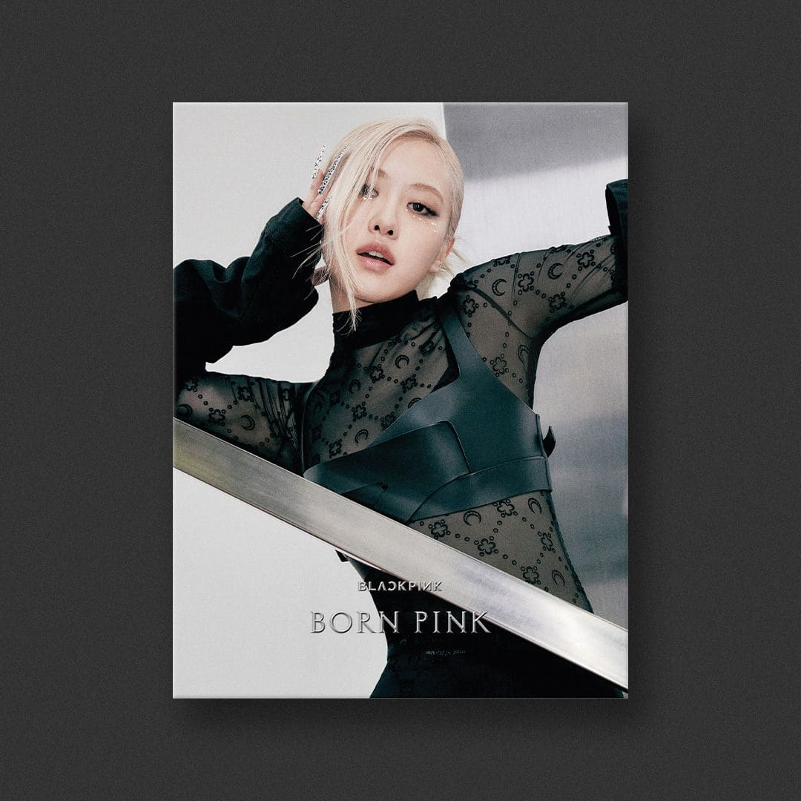
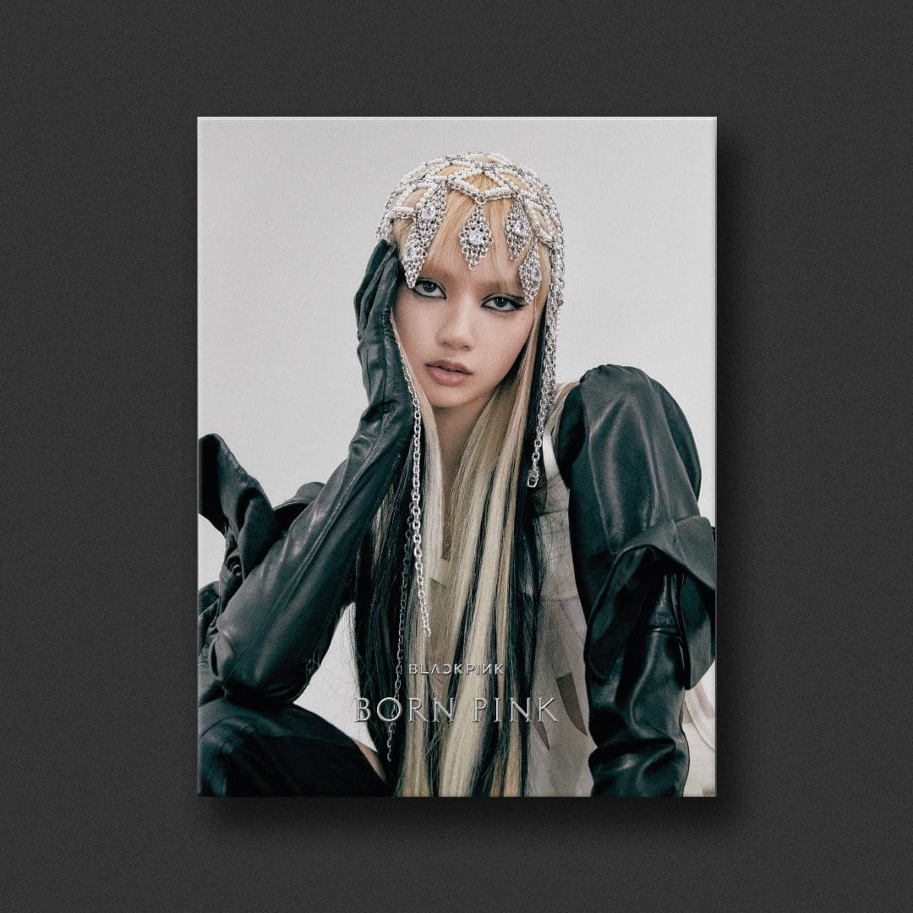
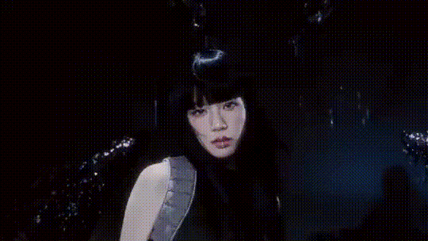

| Home | Discografia | Loja | Comunidade |
|---|
|  |  |  |  |
|---|---|---|---|
| Jisoo | Jennie | Rose | Lisa |
|  |  |
 |
|
Jisoo, cujo nome completo é Kim Ji-soo, nasceu em 3 de janeiro de 1995, em Seul, Coreia do Sul. Ela cresceu em uma família de classe média e sempre teve interesse pela música desde jovem. Jisoo tem uma irmã mais velha e um irmão mais novo. Antes de estrear no BLACKPINK, treinou na YG Entertainment por cerca de cinco anos. Além de sua carreira musical, Jisoo é atriz e apareceu em dramas, como "Snowdrop". Ela também é uma influente modelo, trabalhando com várias marcas. |
Jennie nasceu em 16 de janeiro de 1996, em Seul, Coreia do Sul. Passou parte de sua infância na Nova Zelândia, onde estudou. Essa experiência internacional influenciou sua visão de mundo e seu estilo musical. Jennie foi a primeira integrante a lançar um single solo, "SOLO", que foi um grande sucesso. Ela é conhecida por seu estilo único e se tornou um ícone de moda, colaborando com marcas de alta costura e sendo um rosto conhecido nas passarelas. |
Rosé, cujo nome verdadeiro é Park Chaeyoung, nasceu em 11 de fevereiro de 1997, em Christchurch, Nova Zelândia. Cresceu em Melbourne, Austrália. Mudou-se para a Austrália com a família quando era jovem e começou a tocar guitarra e cantar em sua adolescência. Rosé se destacou como vocalista principal do grupo e, em 2021, lançou seu primeiro EP solo, "R", que foi bem recebido. É reconhecida por seu estilo pessoal e frequentemente aparece em campanhas de moda, sendo embaixadora de marcas renomadas. |
Lisa, cujo nome verdadeiro é Lalisa Manoban, nasceu em 27 de março de 1997, em Buriram, Tailândia. É a única integrante do grupo que não é sul-coreana. Desde jovem, teve interesse pela dança e pela música, participando de várias competições de dança na Tailândia. Mudou-se para a Coreia do Sul para treinar na YG Entertainment e tornou-se conhecida por suas habilidades de dança e rap. Em 2021, lançou seu primeiro single solo, "LALISA", que teve grande sucesso. É uma influente figura na moda e é conhecida por seu estilo ousado. |